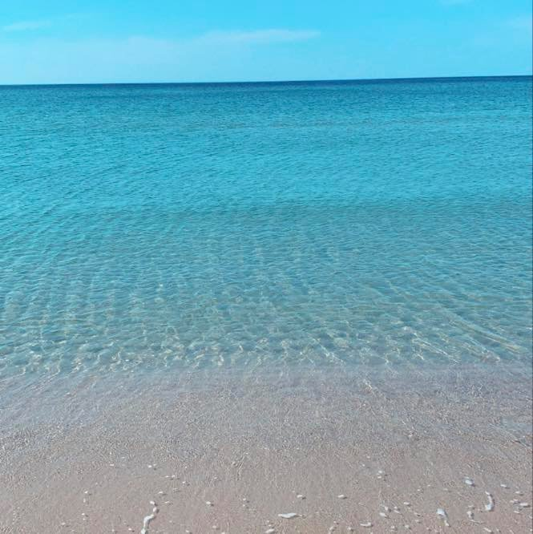
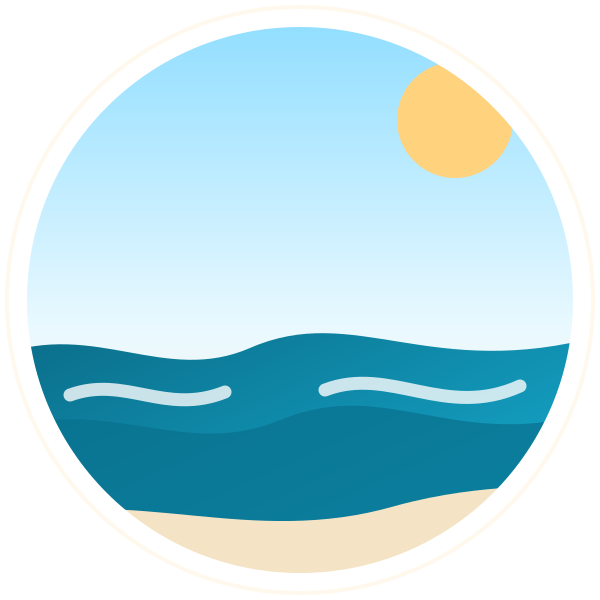
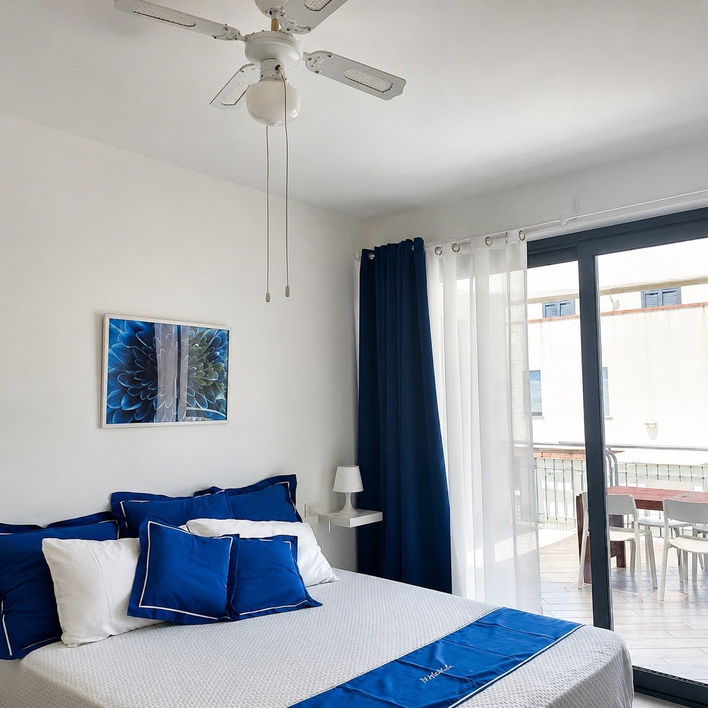
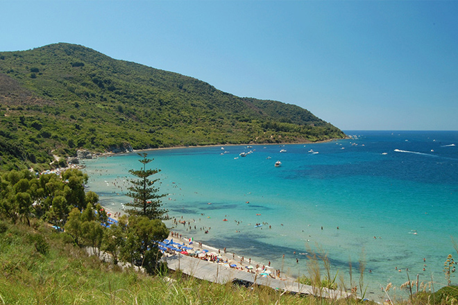
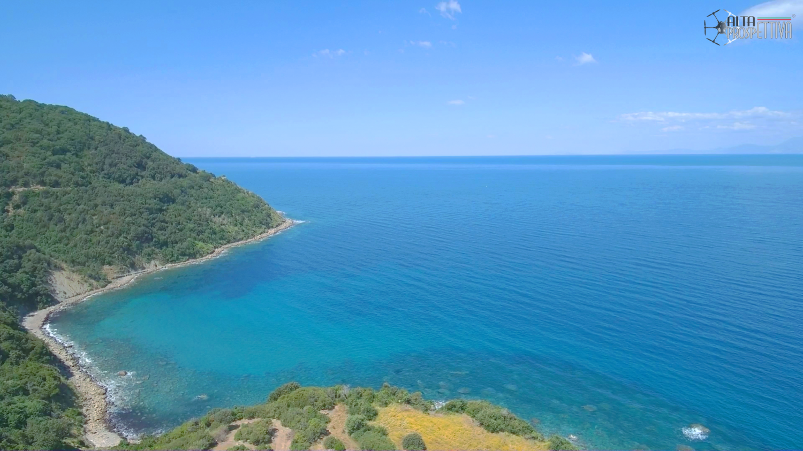
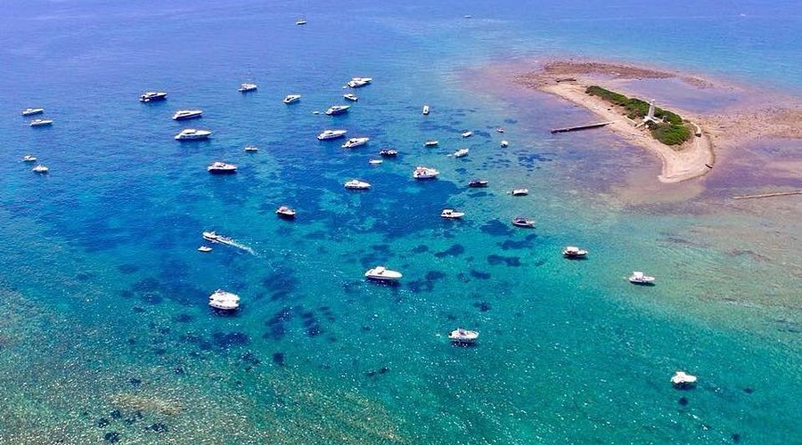
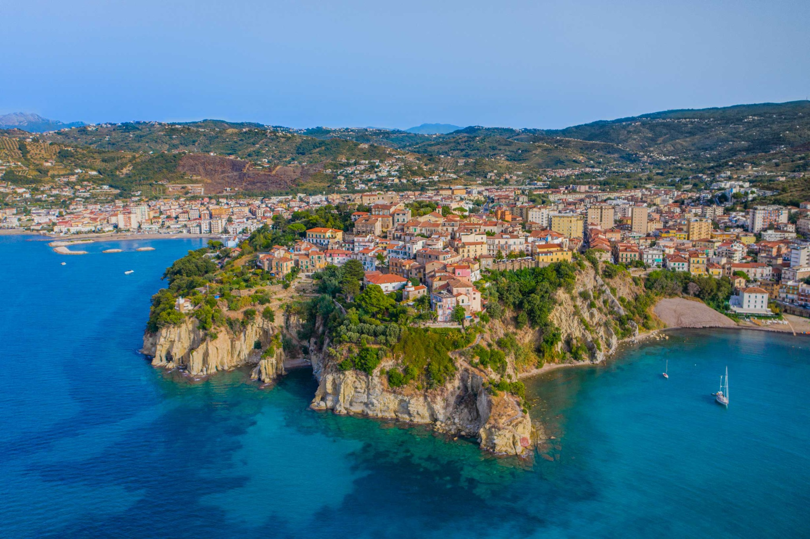
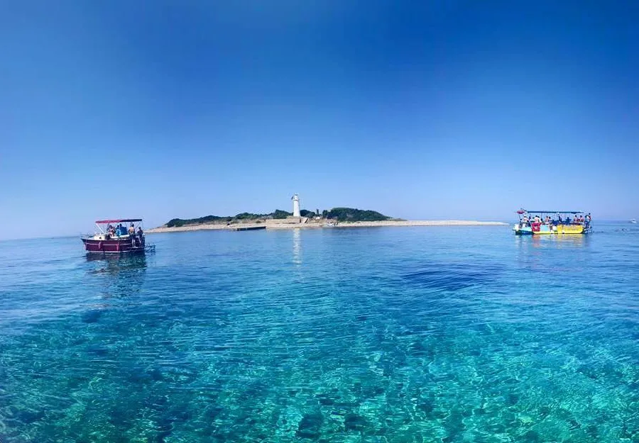

Mare di Paestum
Acqua limpida, spiagge ampie e fondali chiari: il mare di Paestum è ideale per giornate di relax e bagni vicino alla struttura.

Villa Febe Paestum Casa vacanzeCasa vacanze a Paestum
Casa vacanze accogliente in Via Apollo, Licinella - Torre di Paestum. Ideale per massimo 4 persone, a pochi minuti dal mare, dal centro storico di Paestum e da Agropoli.
Benvenuti
Villa Febe Paestum è una casa vacanze luminosa e curata, pensata per chi cerca un soggiorno tranquillo vicino al mare, con spazi pratici e accoglienti.
La casa si trova in Via Apollo, nella zona Licinella - Torre di Paestum. Il mare dista circa 500 metri ed è raggiungibile anche a piedi, quindi è comoda per chi vuole vivere la spiaggia senza usare sempre l’auto.
È adatta a massimo 4 persone, quindi è ideale per famiglie, coppie o piccoli gruppi. Gli ambienti sono semplici, ordinati e piacevoli: camera luminosa, cucina attrezzata, terrazzo esterno, posto auto privato per due macchine, con possibilità di parcheggiare motociclette anche all’interno della proprietà, e dettagli che richiamano i colori del mare.
La posizione permette di raggiungere facilmente il centro storico di Paestum, il Lungomare San Marco di Agropoli e il Porto di Agropoli. Sono consigliate anche escursioni in barca per scoprire alcuni dei luoghi più belli della costa, come la Baia di Trentova, il Vallone e Punta Licosa.
Nel periodo estivo si consiglia di contattare direttamente la struttura per verificare disponibilità, condizioni e durata del soggiorno.

Galleria
Guarda gli ambienti interni, il terrazzo e gli spazi esterni della casa.
Contatti
Scrivici per disponibilità, prenotazione, dettagli della casa o consigli su ristoranti, attività, lidi e luoghi da visitare.
Nel periodo estivo si consiglia di contattare direttamente la struttura per verificare disponibilità, condizioni e durata del soggiorno.
Mare e territorio
Durante il soggiorno si consigliano anche escursioni in barca e visite lungo la costa per scoprire alcuni dei posti più belli tra Paestum, Agropoli e il Cilento. Tra le mete più apprezzate ci sono la Baia di Trentova, il Vallone, Punta Licosa e il Porto di Agropoli.
Per maggiori informazioni sulle escursioni consigliate, contattami per informazioni.

Acqua limpida, spiagge ampie e fondali chiari: il mare di Paestum è ideale per giornate di relax e bagni vicino alla struttura.

Una delle zone più belle della costa, apprezzata per il mare limpido, i colori intensi e il panorama naturale.

Una tappa suggestiva da vedere durante un’escursione, perfetta per chi ama scorci naturali e acque trasparenti.

Meta molto amata per il mare cristallino, i panorami spettacolari e l’atmosfera unica della costa cilentana.

Una zona molto piacevole per passeggiare, vedere il panorama sul mare e partire alla scoperta della costa.

Le escursioni in barca permettono di ammirare calette, fondali limpidi e scorci davvero belli lungo la costa.
Comfort
Tutto il necessario per un soggiorno comodo vicino al mare, con punti di interesse tra Paestum, Agropoli e la costa cilentana.
Soluzione ideale per famiglie, coppie o piccoli gruppi fino a quattro ospiti.
La spiaggia dista circa 500 metri: comoda per vivere il mare ogni giorno.
Lungomare San Marco e Porto di Agropoli sono perfetti per passeggiate, cene e serate.
Cucina pratica con tavolo, sedie, frigorifero, microonde e piano cottura.
Spazio comodo per colazioni, pranzi veloci e momenti di relax all’aperto.
Disponibile posto auto privato per due macchine. In caso di motociclette, è possibile parcheggiarle anche all’interno della proprietà, comodo per chi arriva in auto.
Tra le attività consigliate ci sono anche escursioni e gite lungo la costa verso Baia di Trentova, il Vallone, Punta Licosa e Porto di Agropoli.
Scrivi su WhatsApp per informazioni, prenotazione e consigli utili sulla zona.
Dove siamo
Villa Febe Paestum si trova in una zona comoda per raggiungere il mare, il centro storico di Paestum e Agropoli.
Su Google Maps puoi cercare “Casa Vacanze Villa Febe Paestum”.
Apri su Google MapsVia Apollo
Licinella - Torre di Paestum
Recensioni
Hai soggiornato da noi? Lascia la tua recensione su Google per aiutare altri ospiti a conoscere Villa Febe Paestum. Le recensioni sono pubbliche e facilmente consultabili da chi sta organizzando la propria vacanza.
Cerca “Casa Vacanze Villa Febe Paestum” su Google Maps oppure apri direttamente la scheda dal pulsante qui sotto.